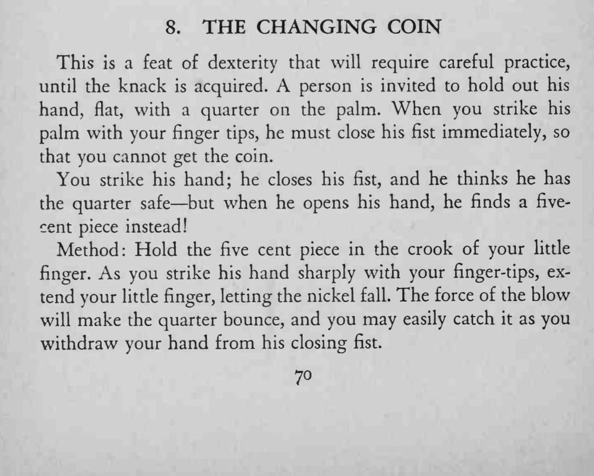
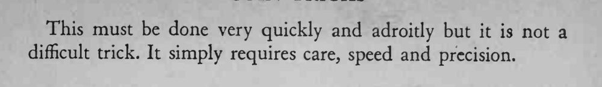

观众把二角五分硬币摊在掌心，魔术师用指尖一击，他立刻握拳，摊开时掌心的硬币却变成了五分镍币。
击掌、松币、收手要在瞬间完成；只求快和准，不必用力过猛。


This is a feat of dexterity that will require careful practice, until the knack is acquired. A person is invited to hold out his hand, flat, with a quarter on the palm. When you strike his palm with your finger tips, he must close his fist immediately, so that you cannot get the coin. You strike his hand; he closes his fist, and he thinks he has the quarter safe but when he opens his hand, he finds a fivecent piece instead! Method: Hold the five cent piece in the crook of your little finger. As you strike his hand sharply with your finger-tips, extend your little finger, letting the nickel fall. The force of the blow will make the quarter bounce, and you may easily catch it as you withdraw your hand from his closing fist. This must be done very quickly and adroitly but it is not a difficult trick. It simply requires care, speed and precision.